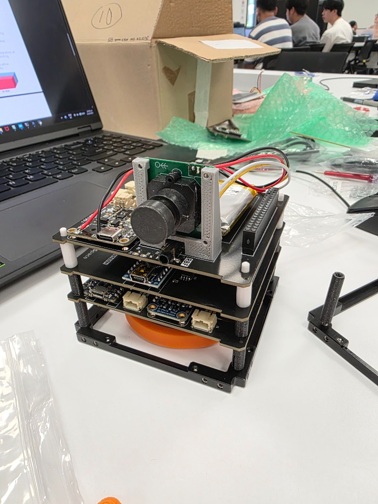
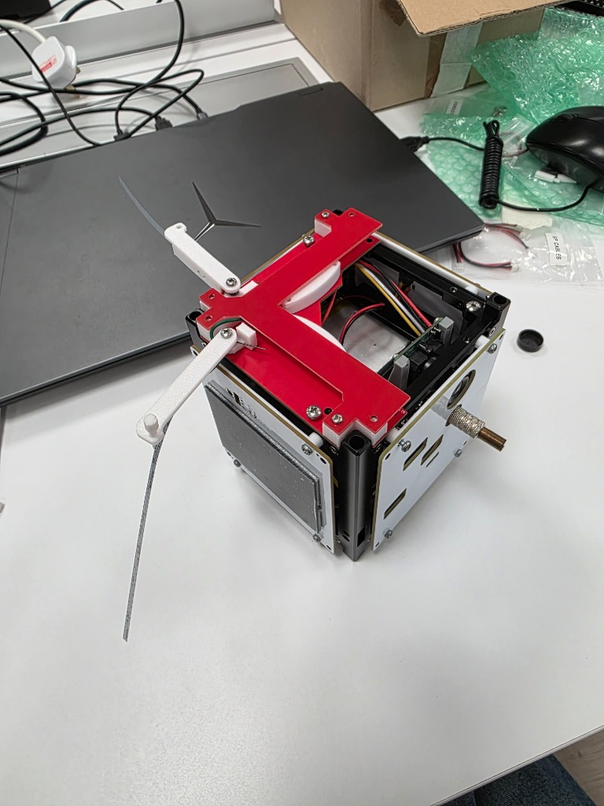
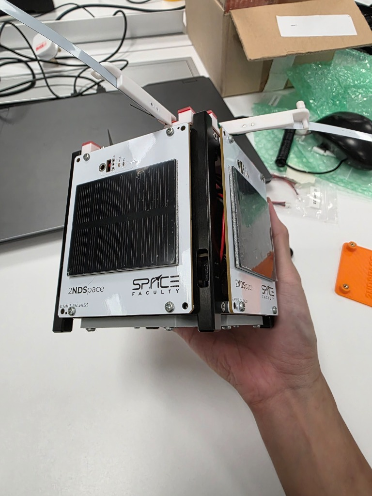
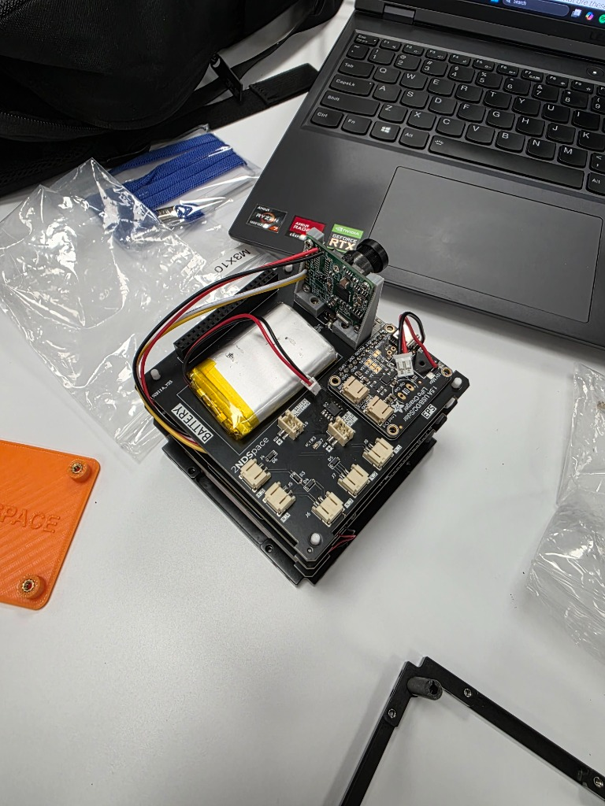
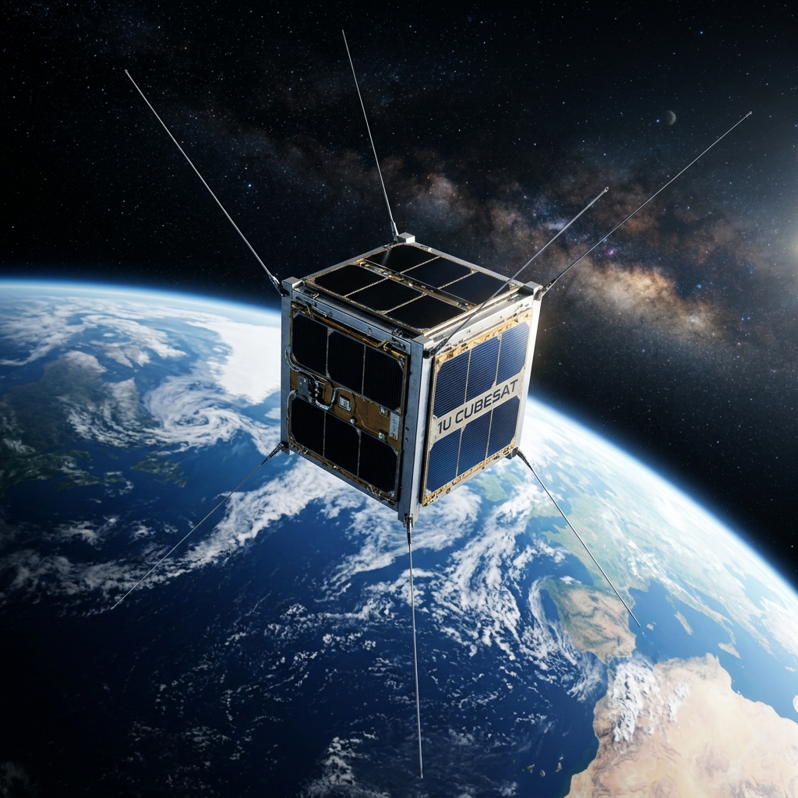

CubeSat Building Workshop (SpaceFaculty)
Project Overview
A comprehensive 1U CubeSat workshop conducted by SpaceFaculty, focusing on the end-to-end integration of satellite avionics. The project involves building three distinct Arduino-based subsystems that communicate securely over LoRa.
Internal Avionics Stack

Antenna Deployment

Solar Panels

Vision System & Power

Conceptual Illustration

*Note: The image above is a photorealistic rendering for illustration purposes, depicting how the fully deployed 1U CubeSat might look in orbit.
This hands-on workshop organized by SpaceFaculty challenged participants to build a functional CubeSat avionics stack from scratch. The system comprises three independent nodes — Ground Station (GS), On-Board Computer (OBC), and Attitude Determination and Control System (ADCS) — each running on an Arduino and communicating wirelessly over LoRa radio at 434 MHz.
System Architecture
The three-node architecture mirrors real satellite subsystem design:
- Ground Station (GS): Sends authenticated commands to the OBC via LoRa, receives telemetry and camera images, validates token-based security handshakes
- On-Board Computer (OBC): Central hub that aggregates sensor telemetry, routes commands to the ADCS, captures camera images with chunked binary LoRa transmission, and manages asynchronous pass-through command routing
- ADCS: Attitude determination using an IMU, sun sensors, and GPS (with NMEA parsing). Controls a reaction wheel via a PID sun-pointing controller with shake-override safety logic
Key Technical Features
LoRa Communication & Security
- All inter-node communication over 434 MHz LoRa radio
- Token-based authentication: GS must send a valid password token before OBC accepts commands
- Tokenized routing ensures only authorized ground operators can command the satellite
ADCS — Attitude Control
- PID controller for reaction wheel sun-pointing
- IMU-based orientation sensing with gyroscope integration
- Shake-override safety logic: disables reaction wheel if excessive vibration detected
- Sun sensor array for coarse sun vector determination
- GPS module with NMEA sentence parsing for position telemetry
OBC — Data Handling
- Camera image capture with chunked binary transmission over LoRa (handling the limited packet size)
- Sensor telemetry aggregation and periodic downlink
- Asynchronous command routing between GS and ADCS subsystems
Skills & Technologies
Arduino, LoRa 434 MHz, PID Control, IMU Sensors, GPS/NMEA, Satellite Systems, Embedded C++, Wireless Communication